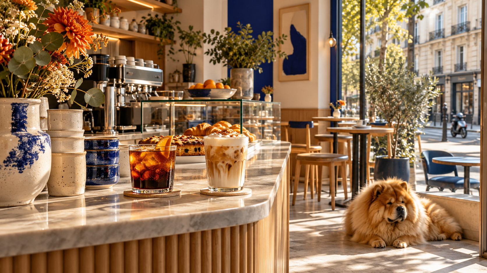

Espresso tonic
Café, tonic vif et agrumes pour les après-midi au soleil.
Un comptoir solaire près de Richard-Lenoir, des grains qui tournent et des recettes qui n’ont pas peur de sortir du rang.
Entrer dans le club
Chez Bagarre, le café de spécialité se veut précis, vivant et jamais intimidant.
Espresso net, méthodes douces et créations glacées composent une pause pensée pour le quartier. Une proposition digitale directe et colorée, à l’image d’un coffee shop indépendant.